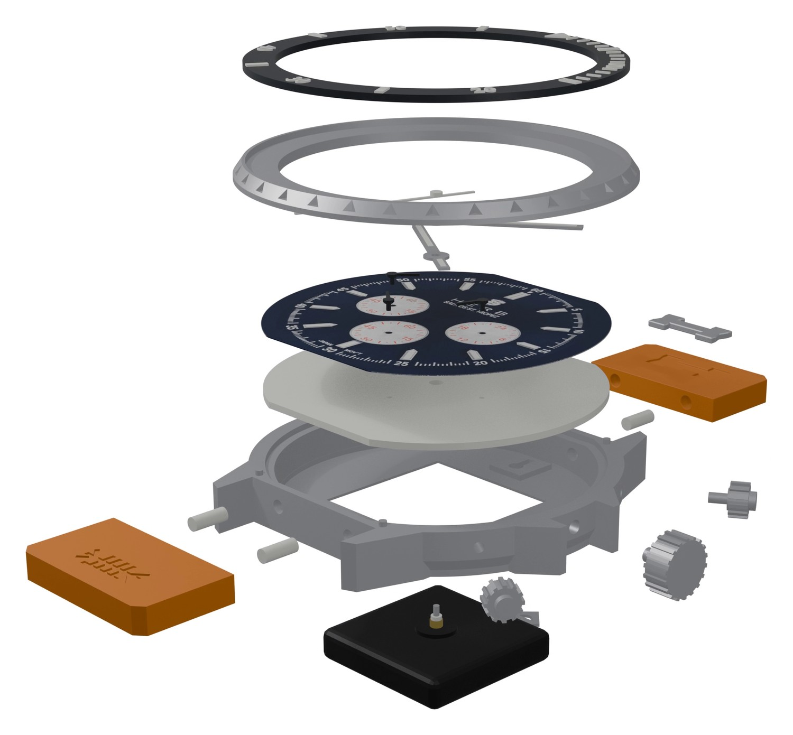

HERB
Wanduhren
Die Anatomie
Was die Montage zerlegt, liegt hier ausgebreitet – jedes Teil an seinem Platz.

22
Bauteile – vom Skalenring
bis zum Quarzwerk
bis zum Quarzwerk
Gehäuse
1
Lünette & Skalenring
2
Zifferblattträger & Zifferblatt im Fotodruck
2
Zeiger – Stunde, Minute, Sekunde, drei Totalisatoren
6
Krone & Drücker
3
Bandsegmente & H-Element
3
Banddübel
4
Quarzwerk mit AA-Zelle
1
Jede Uhr wird von Hand montiert – Skalenring und Zifferblattträger entstehen im Zwei-Farben-Druck.
Die Galerie
Dieselbe Wand, dieselbe Nachmittagssonne – jede Uhr mit ihrem eigenen Auftritt.
Alle Modelle und Bandvarianten in derselben mediterranen Szene – mit Silikonband in kräftigen Farben oder Gliederband in Edelstahl-Optik.


Die Kollektion
Jede Uhr trägt den Geist eines besonderen Ortes – von St. Tropez bis Dubai Marina.
Sechs Zifferblätter mit drei Totalisatoren und feiner Minuterie, jedes exakt 200 mm im Durchmesser.
Salitos
Ascona
Maßstab 5:1
Alle Frontmaße sind exakt verfünffacht – nichts ist frei erfunden. Nur die Bautiefe ist für die Wand gedacht, damit die Uhr flach und ruhig hängt.
Original
Wanduhr
Gehäuse
Ø 44 mm
Ø 220 mm
Lünette
Ø 47 mm
Ø 235 mm
Zifferblatt
Ø 40 mm
Ø 200 mm
Bandbreite
21 mm
104 mm
Original
Zifferblatt Ø 40 mm
Zifferblatt Ø 40 mm
Wanduhr
Zifferblatt Ø 200 mm
Zifferblatt Ø 200 mm
Technische Daten
Maßstab
5:1 zum Original
Gehäuse
Ø 220 mm, additiv gefertigt, mit Krone und Drückern
Lünette
Ø 235 mm, gezahnt, mit Skalenring
Zifferblatt
Ø 200 mm, hochauflösender Fotodruck, plan aufgezogen
Uhrwerk
Quarz, betrieben mit einer AA-Zelle
Zeiger
zweifarbig, mit eingelegten Inlays
Armbänder
Silikon-Optik in kräftigen Farben oder Gliederband in Edelstahl-Optik, wechselbar
Montage
von Hand, Stück für Stück